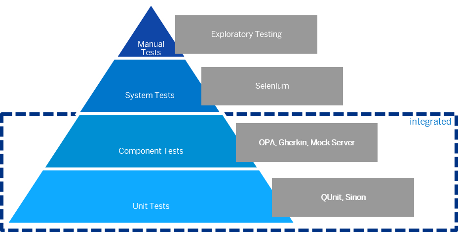

Testing
OpenUI5 provides several testing options, like to unit and integration tests and the mock server.
Before you start implementing your first test, you should think about how to test the different aspects of your application. The image below shows some examples of testing tools along the agile testing pyramid.

Testing pyramidYou can use a local test runner, such as Selenium or Karma, that automatically executes all tests whenever a file in the app project has been changed.